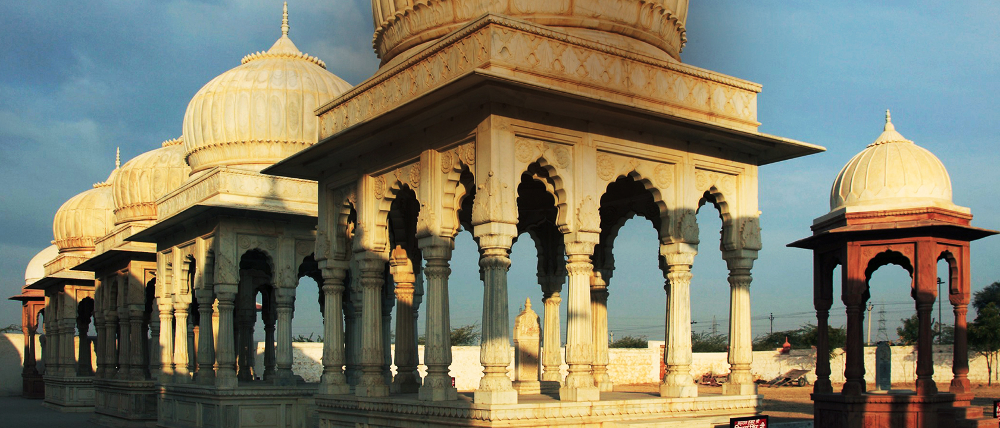

destination

Bikaner
Bikaner is home to one of the only two models of the biplane used by the British during World War I. They were presented by the British to Maharaja Ganga Singh, then ruler of the city. Another unique aspect about Bikaner are the sand dunes that are scattered throughout the district, especially from the north-east down to the southern area. Bikaner is situated in the northern region of Rajasthan. One of the earlier established cities, Bikaner still displays its ancient opulence through palaces and forts, built of red sandstone, that have withstood the passage of time. The city boasts of some of the world’s best riding camels and is aptly nicknamed ‘camel country’. It is also home to one of the world’s largest camel research and breeding farms; as well as being known for having its own unique temple dedicated to Karni Mata at Deshnok, called the Rats Temple.
The origins of Bikaner can be traced back to 1488 when a Rathore prince, Rao Bikaji, founded the kingdom. Legend has it that Bikaji, one of Rao Jodhaji’s five sons, left his father’s Durbar in annoyance after an insensitive remark from his father, the illustrious founder of Jodhpur. Bikaji travelled far and when he came upon the wilderness called Jangladesh, he decided to set up his own kingdom and transformed it into an impressive city.